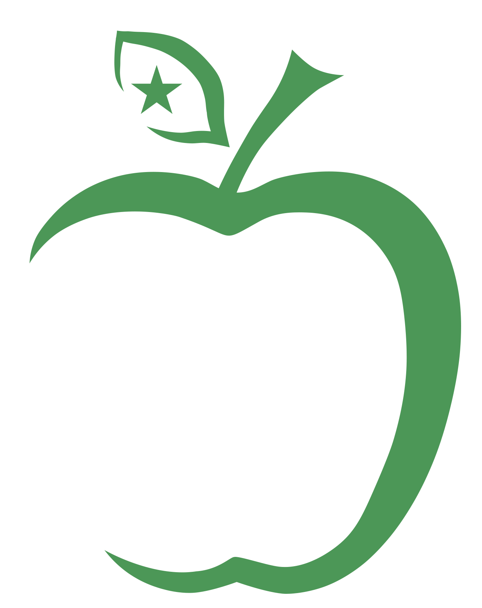

PMEG 2024
25.1.2. Perverba priskribo de objekto
Kelkaj verboj povas peri priskribon de sia objekto. Kvankam tiaj perverbaj priskriboj priskribas objekton, ili ne havu la finaĵon N.
Komparu la du jenajn frazojn:
Vi farbas la domon ruĝan. (= Vi farbas la ruĝan domon.) Ruĝan estas ĉi tie rekta priskribo de la domon. = Vi farbas tiun domon, kiu jam estas ruĝa. Oni ne diras, kiun koloron ĝi nun ricevas.
Vi farbas la domon ruĝa. = Vi farbas la domon tiel, ke ĝi fariĝas ruĝa. Ruĝa estas perverba priskribo de la domo. La ruĝeco aperas pro la ago farbi. Oni ne diras, kiun koloron la domo antaŭe havis. (Oni povas ankaŭ diri: Vi farbas ruĝa la domon. Sed ne diru: *Vi farbas la ruĝa domon.*)
A-vorto aŭ A-vorteca vorteto «
Perverba priskribo de objekto povas esti A-vorto aŭ A-vorteca vorteto:
Ĉu vi farbos vian ruĝan domon verda? ≈ Ĉu via ruĝa domo fariĝos verda?
Ne, ni preferas ĝin flava. = Ne, ni preferas, ke ĝi estu flava.
Ŝi trovis la francajn vinojn tre bonaj. = Ŝi trovis, ke ili estas tre bonaj.
Neniam mi vidis lin tia.Rt.82 = Neniam mi vidis, ke li estas tia.
Li sentis sin tiel malfeliĉa, ke li malbenis la tagon, en kiu li estis naskita.FE.33 = Li sentis, ke li estas tiel malfeliĉa ...
La esprimo senti sin povas havi perverban priskribon de la objekto: Li sentis sin malsana. = Li sentis, ke li estas malsana. Sed oni ankaŭ povas uzi E-vorton, kiu tiam estas maniera komplemento de la verbo: Li sentis sin bone. = Lia sento (pri si mem) estis bona. La elekto de finaĵo do dependas de tio, ĉu oni parolas pri eco de la objekto (ĉi-okaze egala al la subjekto), aŭ pri la sento mem. Komparu kun tute simila uzo de aspekti.
Eble tamen N-finaĵo «
Iafoje ĉi tia A-finaĵa priskribo de objekto sence respondas al kiam-frazo, kaj montras staton, kiu ne dependas de la ĉefverba ago. En tiaj okazoj oni povas opinii, ke temas ne pri vera perverba priskribo, sed pri iaspeca komplemento. Tiam oni povas ja uzi N-finaĵon. Tia aldono de N povas iafoje doni nuancan diferencon:
Ni lin trovis malvivan.Rt.138 = Ni lin trovis, kiam li estis malviva. La N de malvivan povas helpi al klareco, sed oni ankaŭ povas ĝin forlasi. Sen N-finaĵo la signifo ankaŭ povas esti: Ni lin trovis, kaj trovis, ke li estas malviva.
Li pentras ŝin nudan. = Li pentras ŝin, kiam ŝi estas nuda. Se oni dirus nuda sen N, la signifo estus: Li pentras bildon, en kiu ŝi estas nuda. Sen N la signifo eĉ povas esti: Li pentras ŝin, kiam li mem estas nuda. Sed por tia signifo estas pli klare diri: Li nuda pentras ŝin.
Ĉi tiun vorton li uzas solan. Li uzas tiun vorton sen aliaj vortoj. (Ĉi tiun vorton li uzas sola. Nur li uzas tiun vorton.)
Ofte en vespero ŝi vidadis lin forveturantan sub la sonoj de muziko.FA1.91 Ŝi vidadis lin, kiam li estis forveturanta.
Mi ŝatas la matenmanĝajn ovojn malmolaj(n). = Mi ŝatas la matenmanĝajn ovojn, kiam ili estas malmolaj. Mi ŝatas, ke la matenmanĝaj ovoj estu malmolaj. Iuj uzas N en tiaj ĉi frazoj. Aliaj preferas A-vorton sen N. La signifodiferenco praktike estas nula.
La uzo de N-finaĵo en tiaj ĉi okazoj neniam estas deviga. Neuzo de N estas verŝajne pli ofta nuntempe, sed kiam aldono de N donas plian klarecon, oni ne hezitu esprimi sin tiel. Sed kiam la ligo al la ĉefverbo estas forta, kaj la A-vorto ne respondas al kiam-frazo, sed al ke-frazo, tiam oni nepre ne uzu N-finaĵon.
O-vorta frazparto sen rolmontrilo «
Perverba priskribo de objekto povas esti O-vorto (aŭ O-vorta frazparto) sen rolmontrilo:
Mi elektis lin prezidanto.LR.78 = Mi elektis lin, ke li estu prezidanto.
Jam en ilia infaneco oni ja nomadis ilin gefianĉoj.FA3.91 ≈ ... oni diris, ke ili estas gefianĉoj.
Vin mi volas fari mia edzo!FA3.98 = Mi volas fari tiel, ke vi estos mia edzo.
Ĉe iaj verboj oni povas alternative uzi kiel-esprimon. Tiam oni ja uzu N-finaĵon: Ili elektis ŝin kiel kasiston.
O-vorta frazparto kun rolvorteto «
Iafoje frazparto kun rolvorteto povas esti perverba priskribo de objekto:
Kristino al li plaĉis kaj ŝi lin ankaŭ trovas laŭ sia gusto.FA3.91 = ... ŝi trovas, ke li estas laŭ ŝia gusto.
Mi preferas ĝin sen sukero. = Mi preferas, ke ĝi estu sen sukero.
E-vorto «
Se la objekto estas I-verbo, oni uzas E-vorton kiel perverban priskribon de la objekto anstataŭ A-vorto. Tio praktike okazas preskaŭ nur kun verboj, kiuj esprimas opinion, ke io estas ia, precipe opinii kaj trovi:
Nek Snitchey nek Craggs trovis utile batali malkaŝe kontraŭ la fluo de tiu ĉi kolero.BV.70 = Ili ne opiniis, ke batali malkaŝe kontraŭ la fluo estas utile. Objekto de la verbo trovi estas la I-verbo batali (malkaŝe kontraŭ ...). Utile estas perverba priskribo de batali. La priskribon peras la ĉefverbo trovis.
Tiun ĉi penson [...] ni trovis nun necese ripeti ankoraŭ unu fojon.OV.106 = Ni trovis nun necese ripeti tiun ĉi penson ankoraŭ unu fojon. Necese estas perverba priskribo de ripeti (tiun ĉi penson ...).
Dank’ al [...] kelkaj flankoj de la lingvo, pri kiuj mi trovas superflue tie ĉi detale paroli, la lingvo fariĝas eksterordinare facila.FK.233 Superflue estas perverba priskribo de paroli.
Tiu homo iris el la urbo, el Bet-Leĥem de Jehuda, por ekloĝi tie, kie li trovos oportune [ekloĝi].Jĝ.17
Ankaŭ kiam la objekto estas subfrazo, oni uzu E-vorton kiel perverban priskribon. Tio tamen okazas tre malofte:
Mi trovas neelteneble, ke vi ne volas paroli kun mi. (= Mi pensas, ke estas neelteneble, ke vi ne volas paroli kun mi.) La ke-frazo estas objekto de trovas. Neelteneble estas perverba priskribo de la ke-frazo.
Kial oni ĉe vi opinias nekredinde, ke Dio levos la mortintojn?
Mi opinias grave, ĉu ŝi subtenos nin aŭ ne. (= Mi opinias, ke estas grave, ĉu ŝi ...) La demanda ĉu-frazo estas objekto de opinias. Grave estas perverba priskribo de la ĉu-frazo.
Zamenhof ofte enmetis ĝi aŭ tio por reprezenti ke-frazon, kaj iafoje por reprezenti I-verbon. Tiam la perverba priskribo havu A-finaĵon, ĉar ĝi kaj tio estas O-vortecaj vortetoj:
Ĉu vi, kara Mario, trovas ĝin konvena, ke juna virino [...] restu la tutan tagon ĉe la sama tablo kun kelke da junaj viroj?M.88 Konvena estas perverba priskribo de ĝin, sed ankaŭ (nerekte) de la ke-frazo. Nuntempe oni preferas tio kiel helpan vorteton: Ĉu vi trovas tion konvena, ke ...
Se la Akademio trovus ĝin necesa anstataŭigi en ili la “uj” per “i”, mi tion ne malkonsilus.LR.18B Hodiaŭ oni ne plu uzas ĝi tiel. Oni diru ... trovus tion necesa ... aŭ prefere ... trovus necese ...
Iafoje en tiaj ĉi frazoj povus fariĝi malklare, ĉu la E-vorto estas perverba priskribo aŭ maniera komplemento: Li opiniis eble, ke oni maldungu la komizojn. Oni povus miskompreni eble kiel komplementon = Povas esti, ke li opiniis, ke oni ... Tiam oni uzu helpan tio aŭ pli klaran vortordon: Li opiniis tion ebla, ke oni ... Li eble opiniis, ke oni ...
Laŭ PAG oni uzu A-vorton anstataŭ E-vorto kiel perverban priskribon de objekto, kiam la objekto estas I-verbo aŭ subfrazo: Mi opinias konvena vigligi vin per rememorigo. Tio tamen ne ŝajnas rekomendinda, ĉar tio rompas la bazan principon, ke I-verboj kaj subfrazoj estas priskribataj per E-vortoj. Sed oni povas trovi plurajn ekzemplojn de tia uzo ĉe Zamenhof, kiu hezitis inter A-finaĵo kaj E-finaĵo en tiaj frazoj: La gazetoj ne trovas necesa eniĝi en tion, pri kio ili skribas.FK.283 Ĉar li estis en uniformo, li opiniis nekonvena tiel laŭte krii.FA1.155
En 2012 la Sekcio pri Gramatiko de la Akademio de Esperanto publikigis dokumenton, en kiu ĝi diris, ke ambaŭ uzoj estas pravigeblaj. Ĝi tamen rekomendis al verkistoj de lernolibroj, ke oni uzu E-finaĵon ĉe perverba priskribo de objekto, kiu mem estas I-verbo aŭ subfrazo. La ĉi-antaŭaj PMEG-aj klarigoj estas konformaj al tiu rekomendo.
I-verbo «
Perverba priskribo de objekto ankaŭ povas esti I-verbo:
La finiĝado de la tago igis ilin rapidi.M.200 = La finiĝado de la tago igis ilin rapidantaj. = La finiĝado de la tago kaŭzis, ke ili rapidis.
Vidu pliajn ekzemplojn en la klarigoj pri I-verboj kaj en la klarigoj pri la verbo igi kaj la verbo lasi.
Kontrolmetodo «
Se oni hezitas, ĉu priskribo de objekto estas rekta aŭ perverba, oni povas anstataŭigi la objekton per pronomo (lin, ŝin, ĝin, ilin k.s.). Rektan priskribon oni tiam emas forpreni, ĉar ĝi estas parto de la objekto. Perverban priskribon oni tamen emas konservi, ĉar ĝi estas memstara frazparto necesa por la senco de la frazo:
Ĉu vi farbas la domon ruĝan? → Ĉu vi farbas ĝin? (= Ĉu vi farbas la ruĝan domon?) Ruĝan estas rekta priskribo.
Ĉu vi farbas la domon ruĝa? → Ĉu vi farbas ĝin ruĝa? Ruĝa estas perverba priskribo.
Mi vidis miajn amikojn forirantaj per trajno. → Mi vidis ilin forirantaj per trajno. Forirantaj (per trajno) devas resti por ke la senco de la frazo ne ŝanĝiĝu. Forirantaj estas do perverba priskribo de la objekto, kaj ne havu N-finaĵon. La senco estas: Mi vidis miajn amikojn, kaj vidis, ke ili estas forirantaj per trajno. (Anstataŭ forirantaj oni ankaŭ povas uzi I-verbon: Mi vidis miajn amikojn foriri per trajno.) Se oni dirus forirantajn, la senco fariĝus: Mi vidis tiujn el miaj amikoj, kiuj estis forirantaj per trajno. Aŭ: Mi vidis miajn amikojn, kiam ili estis forveturantaj per trajno.
Priskribo pere de participo «
Ankaŭ aktiva participo povas peri priskribon de sia objekto:
La geedzoj lasis pretigi por si sian tomban ŝtonon kun surskribo kaj nomoj, lasante libera nur la lokon por la jaro de la morto. Libera estas perverba priskribo de la objekto la lokon. Ĝin tamen peras ne verbo, sed la participo lasante, kiu devenas de la verbo lasi. = Ili lasis libera nur la lokon ...
Li estis jam farbinta sian domon verda. La priskribon peras la participo farbinta.
Ŝi sidis tenante la okulojn fermitaj. = Ŝi sidis, dum ŝi tenis la okulojn fermitaj.
Kun povas peri priskribon «
Iafoje, kiam kun kvazaŭ anstataŭas havanta, havante, tenanta aŭ tenante, ĝi povas aperi kun “perverba” priskribo de “objekto”:
Li kuŝis havante/tenante la piedojn direktitaj al la pordo de la domo. → Li kuŝis kun la piedoj direktitaj al la pordo de la domo.FA1.122
Oni ankaŭ povas simple subkompreni havante aŭ havanta (aŭ similan participon) sen aldoni kun, precipe kiam temas pri pozicio de (korpo)parto: Li kuŝis [havante/tenante] la piedojn direktitaj al la pordo de la domo.